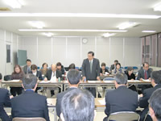

| 【日 時】 |
11月30日（金）13：00 ～ 15：15 |
| 【場 所】 |
埼玉県庁職員会館301会議室 |
| 【参加者】 |
埼玉県：18人（10課）、実行委員団体：22人（14団体、事務局） |
第43回埼玉県消費者大会として埼玉県へ「要請書」を提出し、その８項目のうち７項目（くらし、医療・介護・福祉、子どもの健全な発達、農業と食料自給率、食の安全、消費者行政、環境）について回答がありました。
| １． |
あいさつ
荒岡 一成 氏（埼玉県県民・消費生活課課長）
新井 里美 氏 (第43回埼玉県消費者大会副実行委員長)
|
２．
３． |
｢要請書｣の概要について（伊藤恭一 第43回埼玉県消費者大会実行委員会事務局長）
生活保護の充実、国民健康保険料の適正化、介護の問題・教育格差、乳幼児医療対象年齢の拡大、県内自給率向上、世界平和のための核兵器廃絶運動など、国や市町村に働きかけていただくとともに県行政の施策に反映していただくことをお願いしました。
県の各担当部・課より以下の内容について回答をいただきました。
・くらしについて（福祉部・社会福祉課）
・医療・介護・福祉について（福祉部・介護保険課、保健医療部・医療整備課）
・子どもの健全な発達について（教育局・財務課、義務教育指導課）
・農業と自給率について（農林部・農業政策課、流通販売課）
・食の安全について（保健医療部・食品安全課）
・消費者行政について（総務部・県民･消費生活課）
・環境について（環境部・温暖化対策課、資源循環推進課） |
| |
|
| ４． |
質疑応答が活発に行われました。 |
|